大正新脩大藏經 第21冊
No.1229 穢跡金剛禁百變法經 (1卷)
【唐 阿質達霰譯】
第 1 卷
No. 1229
穢跡金剛禁百變法經一卷
爾時金剛復白佛言。世尊若有善男子善女人。持我此呪無効驗者無有是處。欲令山摧者。取白芥子三升上好安悉香。於山中疑有寶。取鑌鐵刀一枚。畫四方為界。耳淨巾一枚香爐一枚。燒安悉香先呪一千八遍。取白芥子四散及至七遍。作是法其山自摧。若有寶之處其藏神捨寶而出任意用之。若欲令海竭者。先呪一千八遍。以金銅作一龍形。擲於海中即時海竭。若欲令江河逆流者。取安悉香作一象形。無問大小擲水中呪一百八遍。登時逆流。令依舊者呪一淨石擲之水中其水如故。若有雷電霹靂毒龍卒風惡雨者。即作止雷電印。以左手中指無名指小指並屈掌中。頭指以大母指。捻頭指中節上。誦呪呪之。以印遙指雷雹之處自止。若欲令一切鬼神自來歸伏為給使者。取水三斗盛銅器中。以淨灰圍之。即作教攝錄印。以二無名指並屈掌中。令背相倚。二中指頭相捻。二頭指及小指各如開華。以大母指捻中節。默呪一百八遍。其世界內所有諸惡鬼。並來雲集自現其身。捨毒惡心任行人驅使。若禁山者所至之山。誦呪百遍大叫三聲。即作業山印以右手無名指。屈於掌中。直竪中頭大母等指。並直竪。向上印之七遍。即却行七步。後七印山。其山中即一切鳥狩並移出山。若作此印呪七遍。以印向空中印三七度。其空中毫塵不過。若欲令人不語者。書前人姓名。向口中含口。其人口不能言。吐出即語得。若誦一切諸呪先須作壇。若誦我此呪者即勿須作壇。但剋一跋枳金剛榼杵。於佛塔中或於靜室中。用香泥塗地隨其大小。著種種香華供養。安杵壇中呪一百八遍。其杵即自動。或變作種種異物亦勿怪之。更誦呪一百八遍。其杵自去地三尺以來。或五六七尺乃至一丈以來。持法之人即須歸依懺悔發願。我於彼中即現真身。隨行人意所願樂者。並皆速得如意。我即與授菩提之記。即得身心解脫。先須誦十萬遍滿。然後作法若課未充不得効驗。
印法第二
印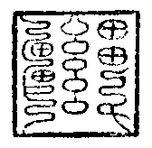此印方一寸八分刻之。呪一千遍。日白膠香度之。剋印日勿令人見。用印印心。得心智自然智宿命智。持印百日。即得住種種大法門。
印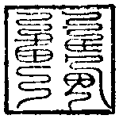方一寸二分呪六百遍。以安悉香度之。帶行令一切人愛樂得大自在永離眾苦。
印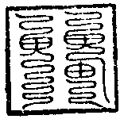方一寸五分刻之。呪六百遍。以白膠香度之。用印印脚。便得飛騰虛空所向自在。
印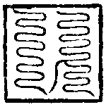方一寸八分刻之。用白膠香度之。呪七千遍。用印印足。可日行三百萬里無人得見。
神變延命法
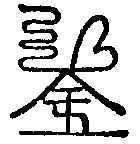鬼病。朱書吞之。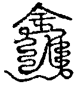精魅鬼病之人。朱吞之七大書枚立瘥神驗。
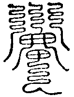若依法之人。取白檀綾二丈一尺七寸。白練裹之。置於地輪世界。令人延年得七十歲。若無人送者。即安自宅中庭。掘地七尺埋之亦得。又得聰明多智辯才無礙。
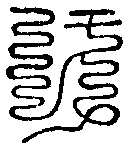此上七道用朱書紙上。吞之千枚令人延年。即得與天地齊壽。不得令人見之。
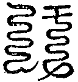此上七道若有人患一切病。以此符書之皆得除瘥。若人書符吞之者。延年益智大驗効矣。
此上七道若有人求種種珍寶者。以朱書此符吞之滿七日。即有種種妙寶自然而至。若求他人財物。當書彼人姓名於符下。其人立即送物到。
此上三符朱書床四脚上。常有八大金剛衛護悉不暫捨。惟須嚴淨勿令污染之物入房。切須慎之。
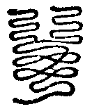有大火災起者。書符擲一枚呪一百八遍。向火中須臾災自滅。
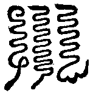有大雨者。書此符呪之一百八遍。向雨擲之其雨立即自定之。
此符朱書吞三枚。及可與他人書符。即有驗効。若不爾者用諸符無驗。
爾時穢跡金剛說此符已。大眾同聲讚言。善哉大力士汝能說是大妙之法。令諸眾生皆得解脫。爾時金剛頃白諸大眾。當知我於汝等。此法若流行之處。我等大天常當護此行法之人助令成就。是時金剛復作是言。若有眾生行此法者。我即往彼現其人前。所求願者我亦施與。令彼得種種變現種種神通所作無礙。常須念我本師釋迦牟尼佛。我即常隨逐之。令一切法皆助成就。爾時金剛說此法已。大眾倍加悲喜。及諸天龍大鬼神等。各奉聖言禮足而去。
穢跡金剛禁百變經一卷